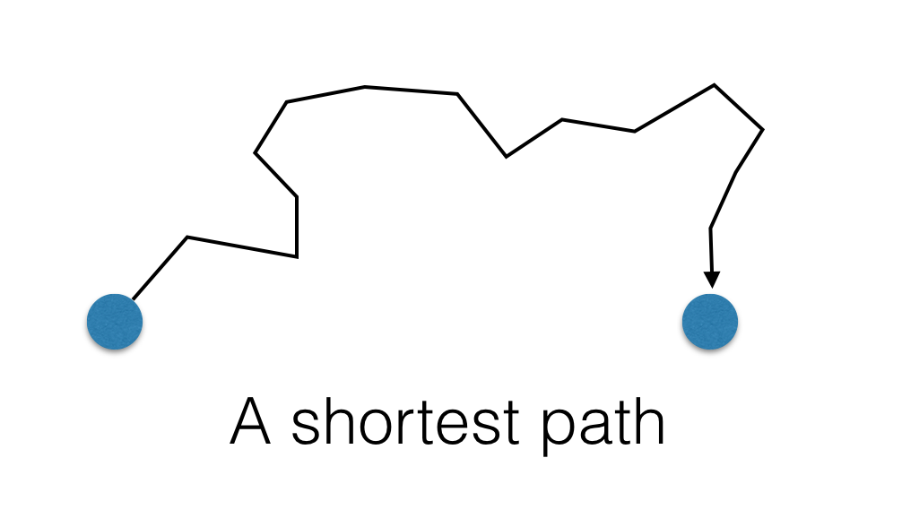
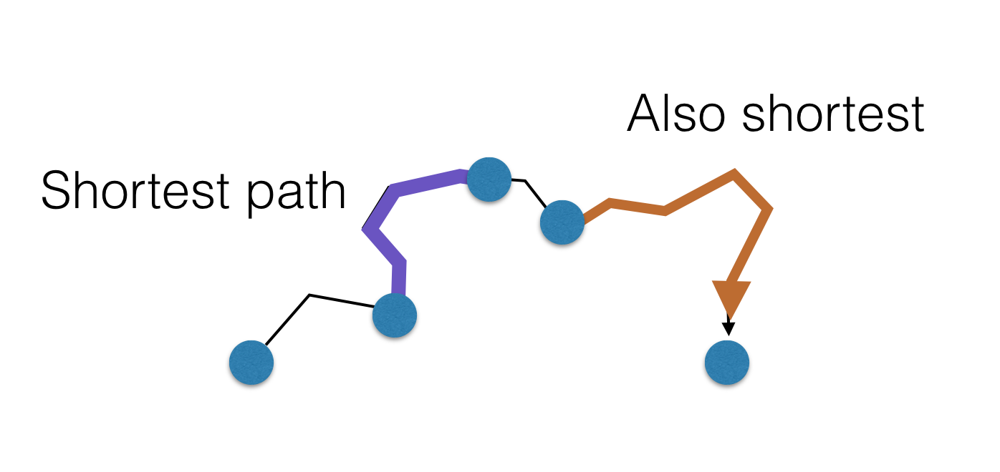
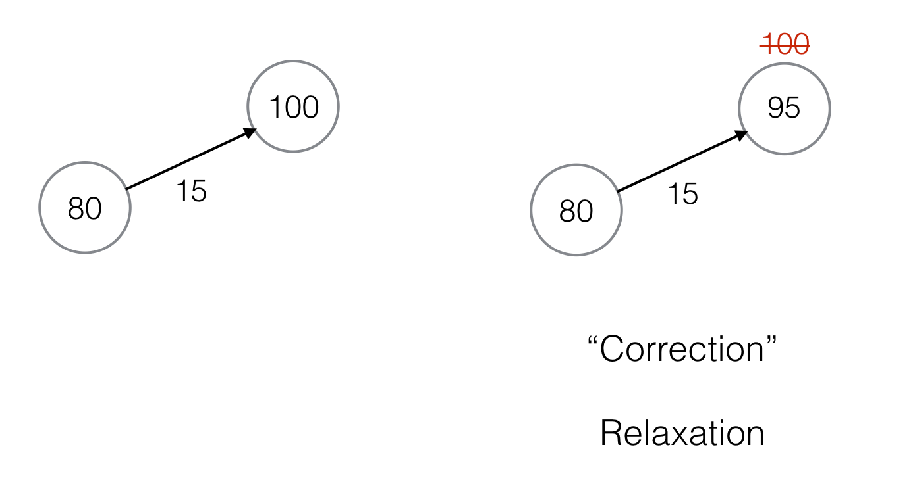

Bellman-Ford algorithm
Dijkstra’s algorithm
Let $G$ be a directed graph, with edge weights given by $w:E(G)\to\mathbb{R}^+$.
Recall: a path $p = \left<v_1, v_2, \dots, v_n\right>$ such that
$(v_i, v_{i+1})\in E(G)$.
Definition: Shortest path
The weight of a path is the sum of the weights of edges in $p$:
$$w(p) = \sum_{i=1}^{n-1}w(v_i, v_{i+1})$$A shortest-path from $u$ to $v$ is a path from $u$ to $v$ with the smallest possible weight.
The distance from $u$ to $v$, $\delta(u, v)$, is the weight of a shortest path from $u$ to $v$.
A path $p = \left<v_1, v_2, \dots, v_n\right>$
is a shortest path if for all other paths $p’$ from $v_1$ to $v_n$ are such
that:
$$ w(p)\leq w(p')$$
Theorem:
If $p$ is a shortest path, any subpaths of $p$ is also a shortest path.


Problem:
Let $G$ be a graph, and $s$ a vertex in $G$. We want to compute a tree $T$ from $s$ to all other reachable vertices $t$ in $G$ such that the tree-path from $s$ to $t$ is a shortest path from $s$ to $t$ in $G$
Solution:
We want to encode the shortest paths tree as a predecessor function (as was done in BFS):
$$\pi: V(G)\to V(G)$$
Also, for each vertex $v$, we also compute the distance $\delta(s, v)$.
$$d : V(G)\to\mathbb{R} : v\mapsto \delta(s, v) $$
We also maintain an over-estimate of the distances initially.
We use the edge weights to “correct” the estimates.
Keep “correcting” the estimates until they cannot be reduced anymore.
The final estimates guaranteed to be accurate.
# d: distance function
# parent: predecessor function
def initialize(G, s):
N = len(G.nodes())
for v in G.nodes():
d(v) = N
parent(v) = nil
d(s) = 0
parent(s) = nil

# G: the graph
# w: weights
# (u,v) is an edge
def relax(u, v):
if d(v) > d(u) + w(u,v):
d(v) = d(u) + w(u,v)
parent(v) = u
return True
return False
The Bellman-Ford algorithm:
def bellman_ford(G, w, s):
d = dict()
parent = dict()
__initialize__(G, s)
while True:
modified = False
for e in G.edges():
(u, v) = e
modified = __relax__(u, v) or modified
if not modified:
break
return (d, parent)
def bellman_ford(G, w, s):
d = dict()
parent = dict()
__initialize__(G, s)
while True:
modified = False
for e in G.edges():
(u, v) = e
modified = __relax__(u, v) or modified
if not modified:
break
return (d, parent)
Suppose $G$ has $V$ vertices and $E$ edges.
$T_\mathrm{relax} = \Theta(1)$
The inner loop (line 9-11) is $E\cdot\Theta(1) = \Theta(E)$
For each iteration of the outer loop (line 7), at lease one more $d(v)$ will be accurate. (Why?) Thus, there can be at most $V$ outer iterations.
Therefore, $T = \Theta(V\cdot E)$.
$E \leq V^2$, thus, $T = \mathcal{O}(V^3)$.
If the graph is a DAG, then we can predictively select the right edges to instantly get the correct estimation.
def DAG_shortestpath(G, w):
d = dict()
parent = dict()
initialize(G, w)
for u in topological_sort(G):
for v in G.adjacency[u]:
relax(u, v)
return d, parent
! The specialized Bellman-Ford algorithm runs in $\Theta(V + E)$.
As the DAG-Bellman-Ford algorithm demonstrates, careful selection of the edges to relax will greatly speed up the shortest path construction.
Dijkstra’s observations:
def dijkstra(G, w):
d = dict()
parent = dict()
initialize(G, w)
Q = sorted(G.nodes, key=d)
while len(Q) > 0:
u = Q.pop(0)
for each v in G.adj[u]:
relax(u, v)
reorder(Q, v) # can be done in log(n)-time.
def dijkstra(G, w):
d = dict()
parent = dict()
initialize(G, w)
Q = sorted(G.nodes, key=d)
while len(Q) > 0:
u = Q.pop(0)
for each v in G.adj[u]:
relax(u, v)
reorder(Q, v)
There are $V+E$ iterations of (line 9-10).
The total complexity is therefore: $\Theta((V + E)\log(V))$.
The problem is finding single-source shortest paths in a directed graph $G$.
Bellman-Ford algorithm is $\Theta(V^3)$ in general.
If $G$ is a DAG, then modified Bellman-Ford can run in $\Theta(V + E)$.
Dijkstra’s algorithm is $\Theta((V+E)\log(V))$ in general.